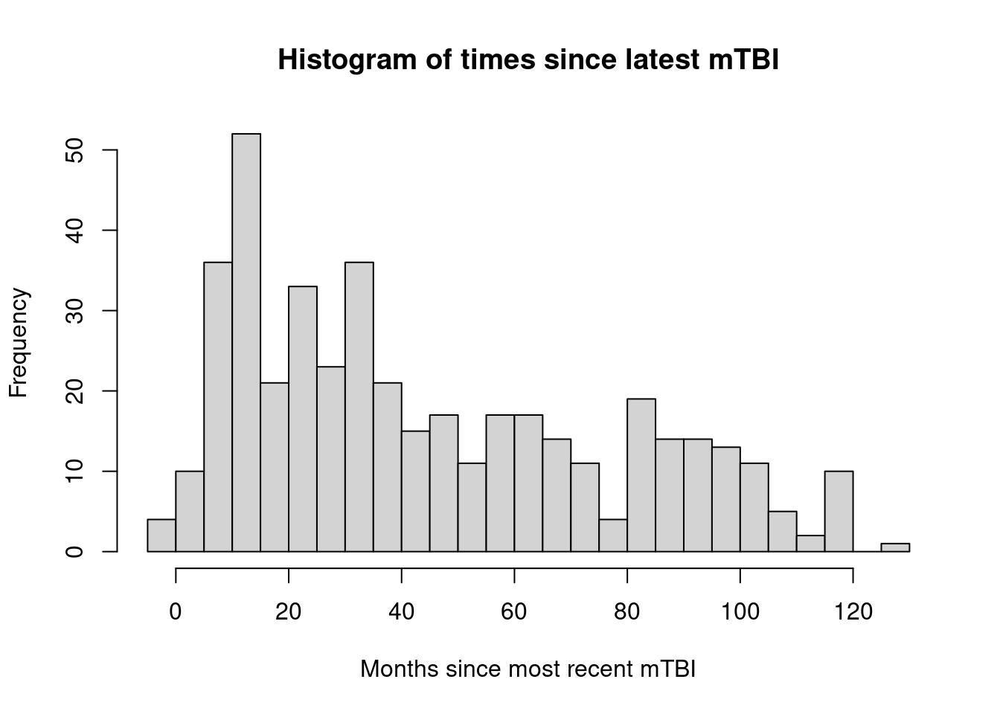
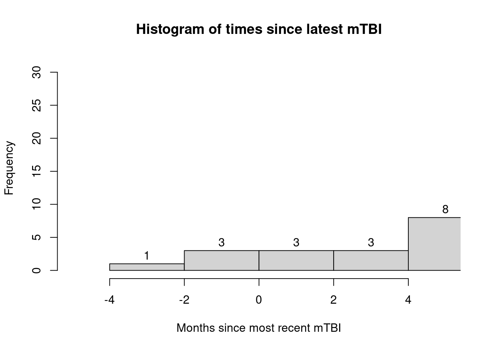

[1] "wheeler-lab/abcd/prashanth-proj/rename-data/rename_abcd_otbi01.Rmd"6 Identifying subjects
The TBI information of the ABCD dataset is split across a few files:
abcd_otbi01.txt: the raw, modified Ohio State TBI screen given at baselineabcd_tbi01.txt: summary scores of abcd_otbi01.txtabcd_lpohstbi01.txt: all longitudinal follow-ups of the baseline screenabcd_lsstbi01.txt: summary scores of abcd_lpohstbi01.txt
All information required for identifying children at a chronic stage following mTBI as of baseline data collection is available in the abcd_otbi01.txt file.
6.1 Renaming the mTBI data
The provided variable names are non-descriptive. The code below was used for renaming the abcd_otbi01.txt file.
Script location:
Renaming abcd_otbi01 columns: ::: {.cell}
library(tidyverse)
abcd_otbi01 <- read_delim("lab-data/abcd/4.0/trauma/abcd_otbi01.txt")[-1, ]
abcd_otbi01_renamed <- abcd_otbi01 %>%
rename(# ever hospitalized/ER for head/neck injury?
hosp_er_inj = tbi_1,
# if LOC, how long?
hosp_er_loc = tbi_1b,
# were they dazed or have memory gap?
hosp_er_mem_daze = tbi_1c,
# how old were they?
hosp_er_age = tbi_1d,
# ever injured in a vehicle accident?
vehicle_inj = tbi_2,
# if LOC, how long?
vehicle_loc = tbi_2b,
# were they dazed or have memory gap?
vehicle_mem_daze = tbi_2c,
# how old were they?
vehicle_age = tbi_2d,
# ever injured head/neck from fall or hit?
fall_hit_inj = tbi_3,
# if LOC, how long?
fall_hit_loc = tbi_3b,
# were they dazed or have memory gap?
fall_hit_mem_daze = tbi_3c,
# how old were they?
fall_hit_age = tbi_3d,
# ever injure head/neck from violence?
violent_hit_inj = tbi_4,
# if LOC, how long?
violent_hit_loc = tbi_4b,
# were they dazed or have memory gap?
violent_hit_mem_daze = tbi_4c,
# how old were they?
violent_hit_age = tbi_4d,
# ever injure head or neck from blast?
blast_inj = tbi_5,
# if LOC, how long?
blast_loc = tbi_5b,
# were they dazed or have memory gap?
blast_mem_daze = tbi_5c,
# how old were they?
blast_age = tbi_5d,
# any other injuries with LOC?
other_loc_inj = tbi_6o,
# how many more?
other_loc_num = tbi_6p,
# how long was longest LOC?
other_loc_max_loc_mins = tbi_6q,
# how many were >= 30 min?
other_loc_num_over_30 = tbi_6r,
# what was their youngest age?
other_loc_min_age = tbi_6s,
# did they experience a period of multiple head injuries?
multi_inj = tbi_7a,
# if LOC, how long?
multi_loc = tbi_7c1,
# were they dazed or have memory gap?
multi_mem_daze = tbl_7c2,
# at what age did the effects begin?
multi_effect_start_age = tbi_7e,
# at what age did the effects end?
multi_effect_end_age = tbi_7f,
# was there another period of multiple head injuries?
other_multi_inj = tbi_7g,
# what was the typical effect of the injury?
other_multi_effect_type = tbi_7i,
# at what age did these effects start?
other_multi_effect_start_age = tbi_7k,
# at what age did these effects end?
other_multi_effect_end_age = tbi_7l,
# was there another period of multiple head injuries?
other_other_multi_inj = tbi_8g,
# was there another period of multiple head injuries?
other_other_multi_effect_type = tbi_8i,
# at what age did these effects start?
other_other_multi_effect_start_age = tbi_8k,
# at what age did these effects end?
other_other_multi_effect_end_age = tbi_8l)
#write_csv(abcd_otbi01_renamed, "lab-data/abcd/processed/prashanth_proj/abcd_otbi01_renamed.csv"):::
Note that all variables with the same prefix (or number originally) are referring to the same injury or set of injuries.
6.2 Identifying subjects at a chronic stage post-mTBI
To identify subjects at a chronic stage post-mTBI, two intermediate pieces of information must be calculated from the original dataset:
- identifying which head injuries were mTBIs
- identifying the time since the most recent mTBI
The structure of the Ohio State TBI screen as used for ABCD data collection was not completely compatible with the most commonly used definition of mTBI1:
At least one of the following:
- Any period of loss of consciousness
- Any loss of memory
- Any alteration in mental state
- Focal neurological deficits
but where the severity does not exceed:
- LOC over 30 minutes
- A Glasgow Coma Scale score below 13
- Post-traumatic amnesia (PTA) greater than 24 hours
A few aspects of the data collection process in the ABCD study precluded the usage of this definition:
- No information was collected regarding the GCS
- Feeling dazed and PTA were combined into a single variable, making it unclear which combination of symptoms was present
- No information was collected regarding the duration of feeling dazed or experiencing PTA
Consequently, I used the following definition to identify mTBIs:
Any child who experienced at least one injury where that injury resulted in either:
- Less than 30 minutes of LOC (including 0 minutes) AND any duration of memory loss / feeling dazed
- LOC that is greater than 0 minutes but less than 30 minutes.
The fixed nature of the questionnaire also meant that some information about multiple mTBIs sustained in the same way or about a very large number of mTBIs throughout a child’s life could have been lost (see the previous section on identifying children with a history of mTBI). For my analyses, I assume these edge cases are not common enough to meaningfully change any obtained conclusions.
The code below generates a new file which adds the following columns to the TBI screen data:
- if a subject has experienced an mTBI prior to baseline
- which of the reported head injuries were mTBIs
- the time since a subject’s most recent mTBI
Script location:
[1] "wheeler-lab/abcd/prashanth-proj/process-data/generate_abcd_otbi01_detailed.Rmd"Generate detailed form of abcd_otbi01: ::: {.cell}
# 2022-04-09 PV
# Summary: export list of patients who have had at least one mTBI as of baseline
# mTBI is defined as (LOC < 30 min & mem/dazed) or (0 min < LOC < 30 min)
# Load data and libraries and assign working directory
library(tidyverse)
library(magrittr)
# Import baseline data
abcd_otbi01 <- read_delim(paste0("lab-data/abcd/processed/prashanth_proj/",
"abcd_otbi01_renamed.csv"),
guess_max = Inf)
# guess_max = Inf required to import without parsing errors (see ?readr)
# Assign injury column values to numeric
abcd_otbi01_detailed <- abcd_otbi01 %>%
mutate(across(hosp_er_inj:other_other_multi_effect_end_age, as.numeric))
# 1. Identify if a subject has had mTBI prior to baseline (col: mTBI)
## It is not possible to properly classify mTBI in the ABCD dataset
## Here, I define an mTBI as a head/neck injury which was either:
## 1. LOC < 30 mins (LOC < 2) and memory loss (mem_daze == 1)
## 2. LOC between 0 and 30 mins (LOC == 1)
## In this section, I create an mTBI column with the values:
## 0 - definitely had 0 mTBI
## 1 - definitely had at LEAST one mTBI
## 0.5 - impossible to know if patient had at least one mTBI
abcd_otbi01_detailed %<>%
mutate(mtbi = case_when(
(hosp_er_loc < 2 & hosp_er_mem_daze == 1) | hosp_er_loc == 1 ~ 1,
(vehicle_loc < 2 & vehicle_mem_daze == 1) | vehicle_loc == 1 ~ 1,
(fall_hit_loc < 2 & fall_hit_mem_daze == 1) | fall_hit_loc == 1 ~ 1,
(violent_hit_loc < 2 & violent_hit_mem_daze == 1) | violent_hit_loc == 1 ~ 1,
(blast_loc < 2 & blast_mem_daze == 1) | blast_loc == 1 ~ 1,
(other_loc_num - other_loc_num_over_30) > 0 ~ 1,
(multi_loc < 2 & multi_mem_daze == 1) | multi_loc == 1 ~ 1,
other_multi_inj == 1 ~ 0.5,
other_other_multi_inj == 1 ~ 0.5,
TRUE ~ 0))
# 2. Identify if a subject has had a moderate or severe TBI prior to baseline
## (col: moderate_or_severe_tbi)
## based on the structure of the questionnaire, this can only be done by looking at LOC
abcd_otbi01_detailed %<>%
mutate(moderate_or_severe_tbi = case_when(
(hosp_er_loc > 1 |
vehicle_loc > 1 |
fall_hit_loc > 1 |
violent_hit_loc > 1 |
blast_loc > 1 |
other_loc_num_over_30 > 0 |
multi_loc > 1) ~ 1,
other_multi_inj == 1 ~ 0.5,
other_other_multi_inj == 1 ~ 0.5,
TRUE ~ 0))
# 3. Identify which injuries led to an mTBI (col: *_mtbi)
## 3-1) convert ages from approximate years to approximate months for
## subsequent calculations
abcd_otbi01_detailed$blast_age <-
abcd_otbi01_detailed$blast_age * 12
abcd_otbi01_detailed$hosp_er_age <-
abcd_otbi01_detailed$hosp_er_age * 12
abcd_otbi01_detailed$vehicle_age <-
abcd_otbi01_detailed$vehicle_age * 12
abcd_otbi01_detailed$fall_hit_age <-
abcd_otbi01_detailed$fall_hit_age * 12
abcd_otbi01_detailed$violent_hit_age <-
abcd_otbi01_detailed$violent_hit_age * 12
abcd_otbi01_detailed$other_loc_min_age <-
abcd_otbi01_detailed$other_loc_min_age * 12
abcd_otbi01_detailed$multi_effect_end_age <-
abcd_otbi01_detailed$multi_effect_end_age * 12
## 3-2) generate columns indicating which injury types were mTBIs
abcd_otbi01_detailed %<>%
mutate(hosp_er_mtbi = case_when(
(hosp_er_loc < 2 & hosp_er_mem_daze == 1) | hosp_er_loc == 1 ~ TRUE,
TRUE ~ FALSE))
abcd_otbi01_detailed %<>%
mutate(vehicle_mtbi = case_when(
(vehicle_loc < 2 & vehicle_mem_daze == 1) | vehicle_loc == 1 ~ TRUE,
TRUE ~ FALSE))
abcd_otbi01_detailed %<>%
mutate(fall_hit_mtbi = case_when(
(fall_hit_loc < 2 & fall_hit_mem_daze == 1) | fall_hit_loc == 1 ~ TRUE,
TRUE ~ FALSE))
abcd_otbi01_detailed %<>%
mutate(violent_hit_mtbi = case_when(
(violent_hit_loc < 2 & violent_hit_mem_daze == 1) | violent_hit_loc == 1 ~ TRUE,
TRUE ~ FALSE))
abcd_otbi01_detailed %<>%
mutate(blast_mtbi = case_when(
(blast_loc < 2 & blast_mem_daze == 1) | blast_loc == 1 ~ TRUE,
TRUE ~ FALSE))
abcd_otbi01_detailed %<>%
mutate(other_loc_mtbi = case_when(
(other_loc_num - other_loc_num_over_30) > 0 ~ TRUE,
TRUE ~ FALSE))
abcd_otbi01_detailed %<>%
mutate(multi_mtbi = case_when(
(multi_loc < 2 & multi_mem_daze == 1) | multi_loc == 1 ~ TRUE,
TRUE ~ FALSE))
# 4. Identify time since each type of mTBI (col: *_mtbi_mpi)
## The syntax 'case_when(injury_type ~ ...)` means that variables are only calculated
## if the associated injury type actually was an mTBI
abcd_otbi01_detailed %<>%
mutate(hosp_er_mtbi_mpi =
case_when(hosp_er_mtbi ~ interview_age - hosp_er_age))
abcd_otbi01_detailed %<>%
mutate(vehicle_mtbi_mpi =
case_when(vehicle_mtbi ~ interview_age - vehicle_age))
abcd_otbi01_detailed %<>%
mutate(fall_hit_mtbi_mpi =
case_when(fall_hit_mtbi ~ interview_age - fall_hit_age))
abcd_otbi01_detailed %<>%
mutate(violent_hit_mtbi_mpi =
case_when(violent_hit_mtbi ~ interview_age - violent_hit_age))
abcd_otbi01_detailed %<>%
mutate(blast_mtbi_mpi =
case_when(blast_mtbi ~ interview_age - blast_age))
abcd_otbi01_detailed %<>%
mutate(other_loc_mtbi_mpi =
case_when(other_loc_mtbi ~ interview_age - other_loc_min_age))
abcd_otbi01_detailed %<>%
mutate(multi_mtbi_mpi =
case_when(multi_mtbi ~ interview_age - multi_effect_end_age))
# 5. generate column indicating time since most recent mTBI (col: latest_mtbi_mpi)
abcd_otbi01_detailed %<>%
mutate(latest_mtbi_mpi = pmin(hosp_er_mtbi_mpi,
vehicle_mtbi_mpi,
fall_hit_mtbi_mpi,
violent_hit_mtbi_mpi,
blast_mtbi_mpi,
other_loc_mtbi_mpi,
multi_mtbi_mpi, na.rm = TRUE)):::
The histograms below show the distribution of the time-since-last-mtbi for each subject that received an mTBI prior to baseline data collection.
# 6. visualize time since most recent mTBI as a histogram
## 6-1) all subjects
hist(abcd_otbi01_detailed$latest_mtbi_mpi,
breaks=30,
main="Histogram of times since latest mTBI",
xlab="Months since most recent mTBI")
## 6-2) crop histogram to children that are in a non-chronic stage post-mTBI
### note that the negatives are a result of rounding used when anonymizing ages
hist(abcd_otbi01_detailed$latest_mtbi_mpi,
breaks=50,
xlim=c(-5,5),
labels=TRUE,
main="Histogram of times since latest mTBI",
xlab="Months since most recent mTBI")
## 6-3) count the number of children in a non-chronic stage post-mTBI
sum(abcd_otbi01_detailed$latest_mtbi_mpi < 3, na.rm=TRUE)[1] 7# 7 children had an mTBI within 3 months of baseline data collection
## 6-4) evaluate mean and SD of time since latest mTBI for children at chronic stage post-mTBI
sum(abcd_otbi01_detailed$latest_mtbi_mpi >= 3, na.rm=TRUE)[1] 424chronic_subject_mtbi_mpis <- abcd_otbi01_detailed %>%
select(latest_mtbi_mpi) %>%
filter(latest_mtbi_mpi >= 3)
max(chronic_subject_mtbi_mpis)[1] 130min(chronic_subject_mtbi_mpis)[1] 4sd(chronic_subject_mtbi_mpis$latest_mtbi_mpi)[1] 32.0575mean(chronic_subject_mtbi_mpis$latest_mtbi_mpi)[1] 46.06934# 7. Identify number of mTBIs sustained by each subject (col: mtbi_count)
## 7-1) convert NAs to 0s to include in subsequent column generation
abcd_otbi01_detailed$
other_loc_num[is.na(abcd_otbi01_detailed$other_loc_num)] <- 0
abcd_otbi01_detailed$
other_loc_num_over_30[is.na(abcd_otbi01_detailed$other_loc_num_over_30)] <- 0
## 7-2) generate column of mTBI counts
abcd_otbi01_detailed %<>%
mutate(mtbi_count = (hosp_er_mtbi +
vehicle_mtbi +
fall_hit_mtbi +
violent_hit_mtbi +
blast_mtbi +
(other_loc_num - other_loc_num_over_30) +
multi_mtbi))
table(abcd_otbi01_detailed$mtbi_count)
0 1 2 3 4 5
11057 306 116 7 1 1 Of the 431 subjects with a previous mTBI,
- 306 of them had 1 mTBI
- 116 of them had 2 mTBIs
- 7 of them had 7 mTBIs
- 1 of them had 4 mTBIs
- 1 of them had 5 mTBIs
write_csv(abcd_otbi01_detailed,
"lab-data/abcd/processed/prashanth_proj/abcd_otbi01_detailed.csv")A few types of injuries were handled differently from the rest in the above code:
- for
other_loc, the questionnaire asked for a total number of injuries with LOC as well as a total number of injuries with LOC above 30 minutes.- If their difference was above 0, they were labeled as having had an mTBI.
- for
other_multiandother_other_multi, insufficient information was provided to determine the severity of the associated injuries.
For my analyses, I consider 3 months to be the threshold at which an mTBI patient enters a chronic stage post-injury. The subject list was then defined in the following code:
Script location: ::: {.cell} ::: {.cell-output .cell-output-stdout}
[1] "wheeler-lab/abcd/prashanth-proj/get-subjects/get-baseline-mtbi-subjects.Rmd"::: :::
Export chronic-stage mTBI subject list: ::: {.cell}
# Load libraries
library(tidyverse)
library(magrittr)
# import data
abcd_otbi01 <-
read_delim("lab-data/abcd/processed/prashanth_proj/abcd_otbi01_detailed.csv",
guess_max = Inf)
# extract patients at with mTBI
baseline_mtbi_subjects <- abcd_otbi01 %>%
filter(mtbi == 1 & latest_mtbi_mpi >= 3) %>%
select(subjectkey, src_subject_id)
write_csv(baseline_mtbi_subjects,
"lab-data/abcd/processed/prashanth_proj/baseline_chronic_mtbi_subjects.csv"):::